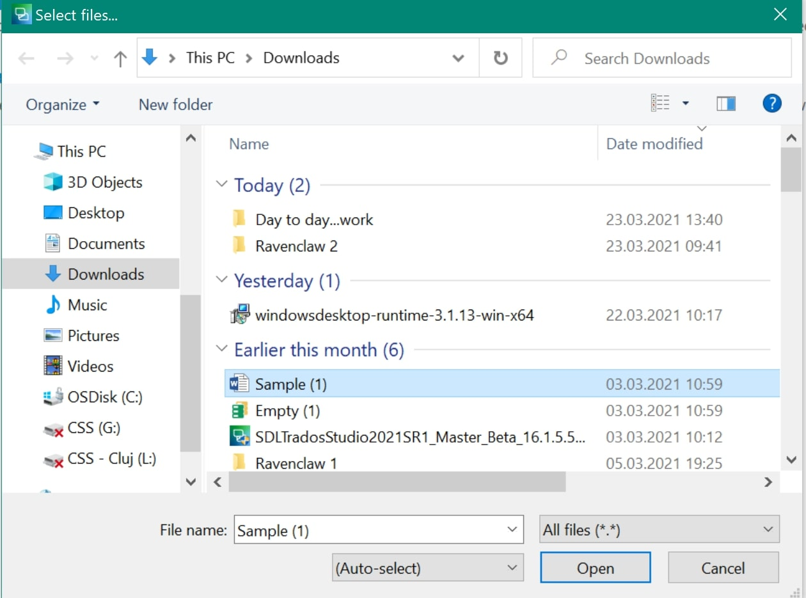
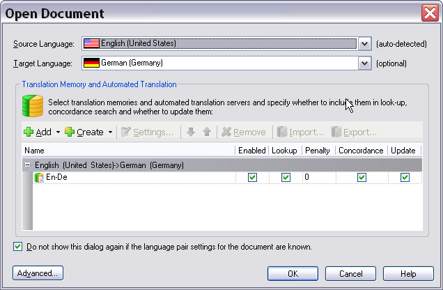

Opening a document for translation
In Trados Studio translators can open single documents for translation and editing.
When processing single documents, the file to translate is opened in Trados Studio, e.g. a Microsoft Word (*.doc) document. In this step, the File Type Support Framework decides which file type plug-in best supports the given document format.

The user then sets the required source and target language and selects one or more translation memories (TM). Note that users are not required to select a TM. They can open and process the file in the editor of Trados Studio without a TM.

Conversion into the Intermediary Format
In the background, an intermediary, bilingual file (e.g. SDLXliff) is generated from the native document. This step is called extraction, as the translatable content gets extracted and exposed for translation/editing purposes. The original native file can be embedded as a dependency file inside the intermediary file. This dependency might be required to generate the native target document from the intermediary file. This might be necessary, as native documents often contain elements such as images, diagrams, etc., which need to be included in the native target document.
The source and target content is presented in a side-by-side editor. The target content is entered (segment by segment) into the column on the right-hand side. The last column contains the so-called document structure information, which indicates whether a segment is e.g. a heading (H), a footnote (FN), etc. (see Using Context Information). The file type plug-in extracts localizable content for translation/editing. The editor view of Trados Studio will also show any special elements as inline placeholder tags, for example footnote references, fields, index markers, etc. (see Tag display modes). Those elements have to be inserted into the target text by the translator, otherwise the corresponding footnote reference, field, etc. would be missing from the resulting target document.

During the translation process the document is saved in the intermediary bilingual format (e.g. SDLXliff). While the translation is in progress, all changes occur within the intermediary file, i.e. the native document stays untouched.

Generating the Native Target File
At the end of the translation phase, the translator uses a command such as Save Target As to generate the target-language version in the native document format. This last step is called generation (i.e. generation of the native target file).